Monzo customers loved seeing their mortgage in the app, but it didn’t make money

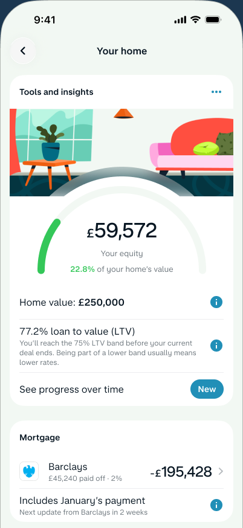


connected mortgages when I joined, from almost any UK lender
An engagement product, with no revenue
To make money, we launched remortgaging with Better.co.uk. It worked, but not enough


~5,000 customers
The goal was 300 applications a month by September 2024. We reached 70
Once people left Monzo, we couldn’t see or change what happened next
The first click-out journey I designed, 2024
In 2025 and 2026, I led design for remortgaging through a strategy reset and an acquisition
Vision and growth
- Led the vision
- Designed the growth experiments
Habito in the app
- Recommendations
- The application form
- The progress tracker
One squad: a PM, 6 engineers, a data scientist, Ops, Compliance and me


2025 · The vision
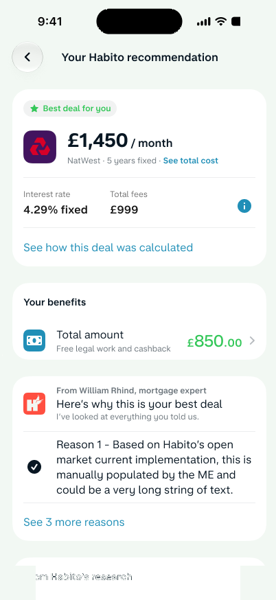
2026 · Recommendations in the app
We lent our engineers for two months, and used the time to listen
Financial Health needed engineers
And our work wasn’t moving the numbers
A discovery phase
Customer research, a vision, and a feasibility check. Research with customers who remortgaged, and customers who dropped out.

The research, told as comic strips: two customers we interviewed · Monzo blog
Customers asked us for four things
“Don’t send me out.”
They expected to get the new deal inside Monzo.

“Use what you know.”
Reuse the data Monzo already holds, instead of asking again.

“Let me choose.”
Some wanted a call, because it made them feel safe. Others preferred less intrusive ways, at a time they chose.
“Tell me what’s happening.”
The wait was the most stressful part.
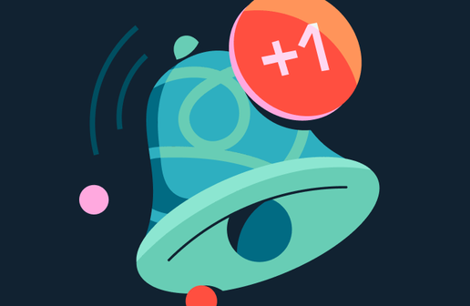
I turned the vision into bets the team could ship

What we could start straight away
- Onboarding to the broker
- A progress tracker closer to real time
- Pre-fill with data we already hold
What needed more work
- Open the door to people without a connected mortgage
- Our own application form
- Estimated deals
- Recommendations in Monzo, view only
The big things
- Recommendations in Monzo, you can accept them
- Adviser chat in the app*
- Document upload*
* Moved back again later in 2026: we needed to grow faster, so the focus moved to first-time buyers.
Reach people before they’re ready to remortgage
While we built towards the vision, we still had revenue targets to hit
Only customers with a connected mortgage and a deal-end date could enter. Over 2m had a mortgage we couldn’t see.
- Indicative rates for everyone
- Estimated deals for connected customers
- An entry point on the Monzo home screen
- Alerts when rates change
~75% above the referral goal
7,500 referrals, the goal was 4,300
Connections ~200 → ~1,000 a day. Rate alerts: 44% of referrals

Indicative rates · no connection needed

Your details · change them to your own numbers

Your estimated rates · for your situation
I designed the onboarding to Habito

Value proposition · the first page

Your Habito account · set up with your Monzo email

Someone else? · add a second applicant

You’re all set · then on to Habito
First, I became the customer
Before we built the tracker, I went through Habito’s journey myself, as a real applicant, and captured every screen.
- Applied as a customer, from the first tap in Monzo to the mortgage illustration
- Kept every screen, email and document in one Figma page
- I gave the team one shared picture of the journey as it really was
- A second account and a second brand, halfway through
- A long form before any value
- The recommendation and the messages lived on Habito’s website and in Habito-branded emails


We shipped the simplest tracker first
“Tell me what’s happening.” People had to go to Habito’s website to see where they were.
Not every step could be tracked from our side. We shipped what we could launch on time. At first, the data came two days late.
Useful, but it didn’t move the metrics
On its own, a tracker mostly lowers the stress of waiting.

- Everything in one place
- Needed data we couldn’t track


- Only states we could track
- Documents as a step to come
- A new screen for every state


- Same steps as Habito’s site
- Could launch on time
- A link out at each step
People thought we were a comparison site
We led with “100+ lenders”. People expected a comparison site, so a broker’s questions felt like a bait-and-switch.
- Lead with expert help
- Say who Habito is, and that it’s free
- Consent in plain words
- Trust signals early
Live since 1 May 2026. No significant change yet, but Ops heard fewer questions about comparing deals.


Move the application into Monzo, pre-filled
The form lived on the broker’s website, with around 200 questions. With Better, almost half of people dropped out there.
- The application, inside Monzo
- Pre-filled with what Monzo knows
- Save and come back (next version)
- Measured step by step
Live since late September 2026, tested with half of customers. Early signal: about 40% more people finish it than on Habito’s website. Still early.


A push the moment the recommendation is ready
The only reminder was an email from Habito, right when people cared most.
A push from Monzo on day 0, and again on day 3
Where should the push take you?
Option B: the tracker already existed, so we could test fast. Acceptance went up.

- 2 taps to the recommendation
- A whole screen to build trust
- A new screen to build
- 3 taps to the recommendation
- A screen people already know
- Nothing new to build
What customers needed to see before choosing a mortgage

A top pick, with alternatives
Framed through the adviser: “Will’s top pick for you”. What it missed: no way to reach the adviser, no honest sense of urgency.

Total cost first
Not the monthly rate. And stay or switch, in pounds: staying with your lender is simpler, switching can be cheaper.

A hub with tools
Stress-test the deal, hear the adviser explain it. After the crit: more progressive disclosure.
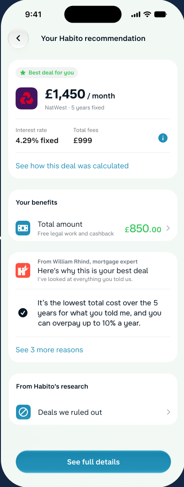
One recommendation, reasons first
The deal, why, the real cost, what was ruled out. Everything else one tap away.
When people aren’t ready, or the lender withdraws the rate
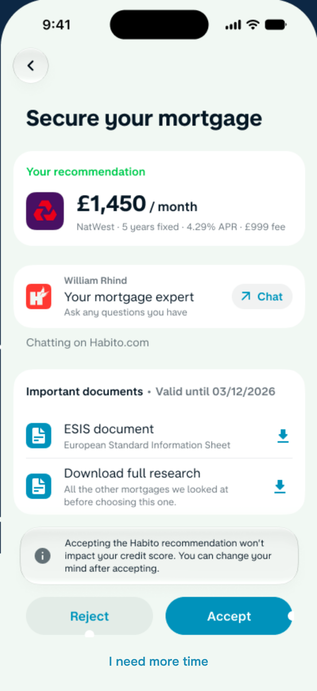

Decision: a third button, “I need more time”. You choose when to be reminded, and the saved recommendation waits in your tracker.
Why: today you can stop your application at any time, but you start again from zero. And a yes-or-no screen loses everyone who isn’t ready.
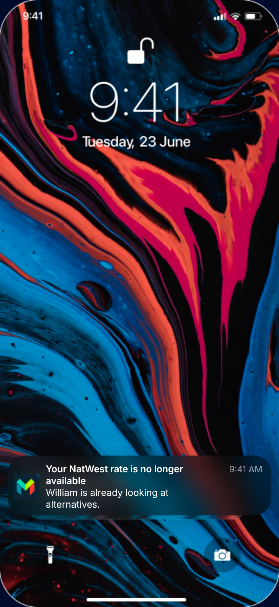
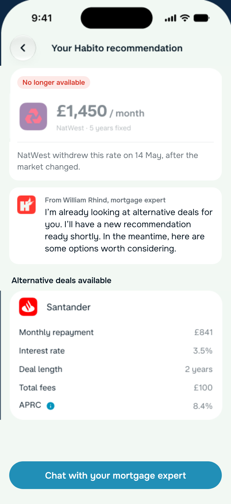
Decision: the adviser speaks first: “I’m already looking at alternatives”, with other deals on the same screen.
Why: lenders pull rates all the time. That shouldn’t be a dead end.
Both paths were designed, but never built.
The tracker shows who has to act next
- One card, ten stages. It changes with the journey, so there is always one next step.
- Orange or green. Orange when you need to act. Green when Habito or the lender is on it.
- The home for everything else. The push lands here. The adviser chat was designed to live here.
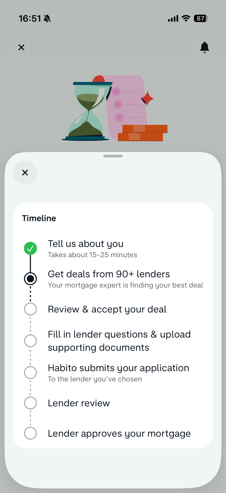
Two screens from the live app, November 2026
On the right: my Figma MVP, rebuilt in code
Open the Figma file ↗The adviser chat: designed, then paused
Wait for Monzo’s own chat
Habito’s chat inside Monzo
A second chat in Monzo: people ask their adviser about a blocked card, or Monzo support about their mortgage.
Kill switch agreed up front: investigate at 2% misrouted chats, roll back at 5%. Pilot at 10%, then a 50/50 test.
The outcome: paused for this year. Resources went to first-time buyers and other priorities. For now, the chat stays in Habito.


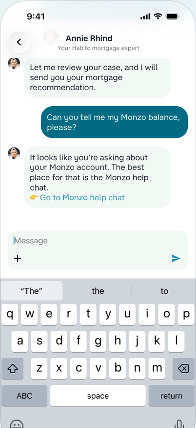
Before scaling, I audited the whole product
Reviewed ten areas of the live product and scored the main journeys on the same six criteria.
No single journey was broken. The product had grown piece by piece: 11 ways of saying “connect your mortgage”.
Three initiatives for the next half, and one longer-term direction: organise the product around your home.
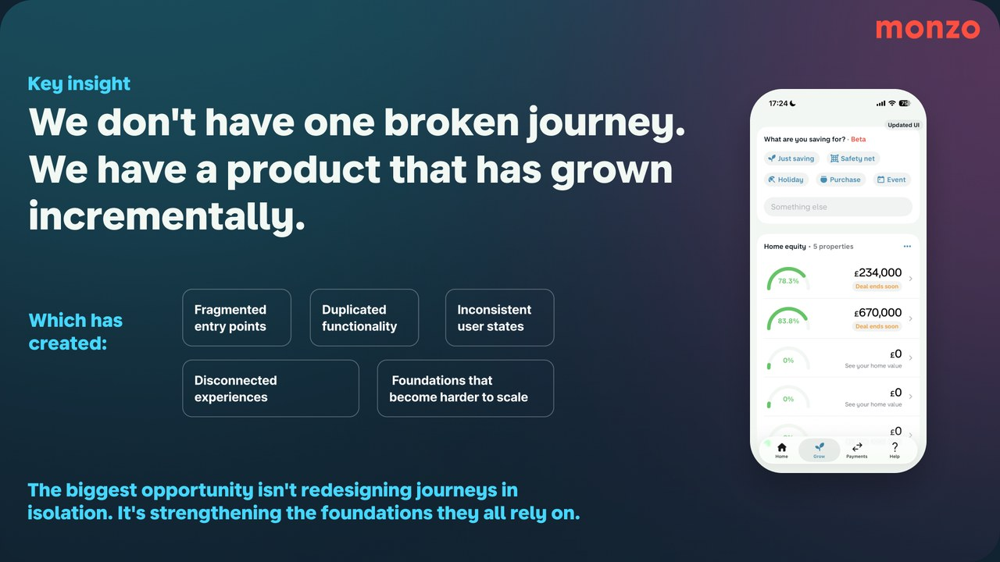
 Two slides from my audit deck
Two slides from my audit deckWhat I learned
More referrals aren’t more mortgages
Design the middle of the funnel as carefully as the entry point

The integration is part of the design
Routing, consent and who you’re talking to are design decisions

Speed needs a kill switch
Agree the guardrails and the rollback before you ship

Name the problem first
“Compare” vs. “broker”: one word changed what people expected

What I’d bring to Benefits
Partners whose systems you don’t own
Monzo + Habito + lenders → Deel + providers

Clear status and support
Who am I talking to, and what happens next?

Rules that change by market
Regulated wording, checked early

Decisions people can’t easily undo
A mortgage at Monzo, benefits at Deel
Where would you like to go deeper?

Four decisions, and why I made them

Value without connecting
If you only looked at rates, your saved rates come first. The earlier visit counts.
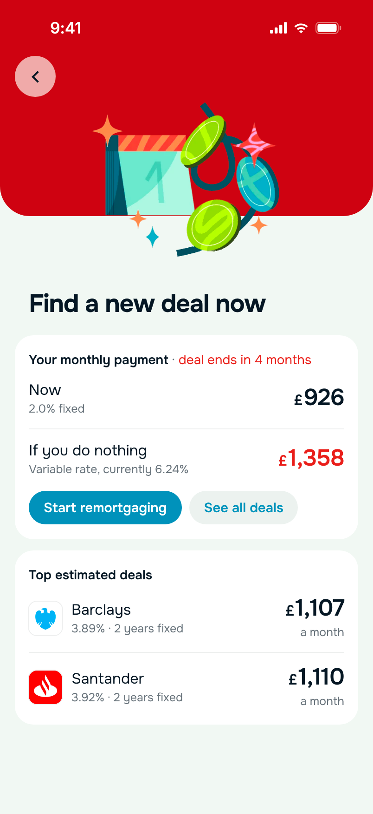
Make the cost concrete
£926 a month now, £1,358 if you do nothing.
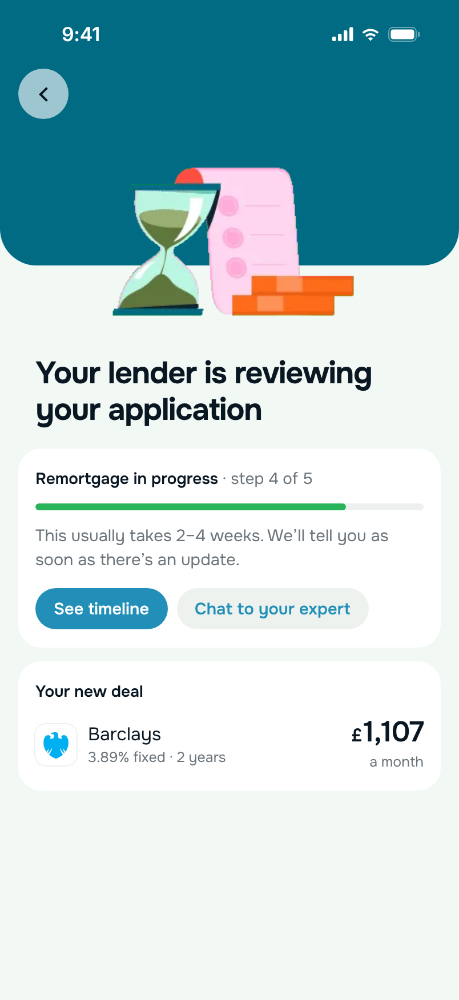
The tracker lives at home
Your progress sits on the home screen.

Never a dead end
If the data fails, show the last known numbers, with a date.
Resolved every time the screen opens: connected? → remortgaging? → months until the deal ends.
Four ways to show two mortgages on one home
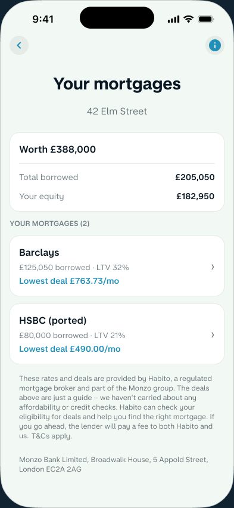

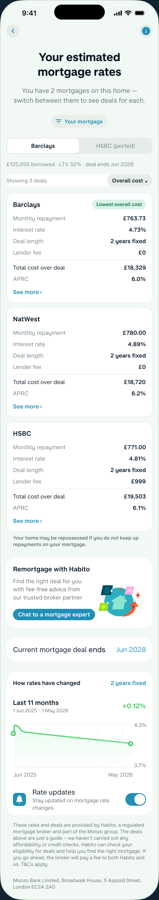
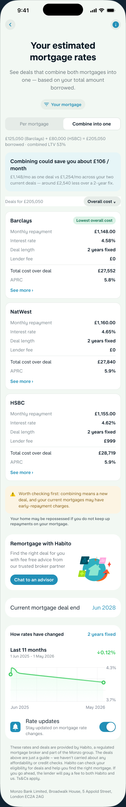
The tools were built for one person with one mortgage. Two mortgages, or a couple, saw confusing or different numbers.
Show the property first, then its mortgages.
The data already adds up at property level. The screen didn’t.
The cheapest fix: both mortgages are already there, they just render badly.
Next: mortgage data straight from the lender

Through Open Banking, with consent you control: you choose the accounts and renew every 90 days.
“You’ll reach the next loan-to-value band before your deal ends.” “Overpaying beats your savings pot.”
“Switching now would cost £2,900 in early repayment charges.” Shared with the FCA as part of Monzo’s Open Finance work.